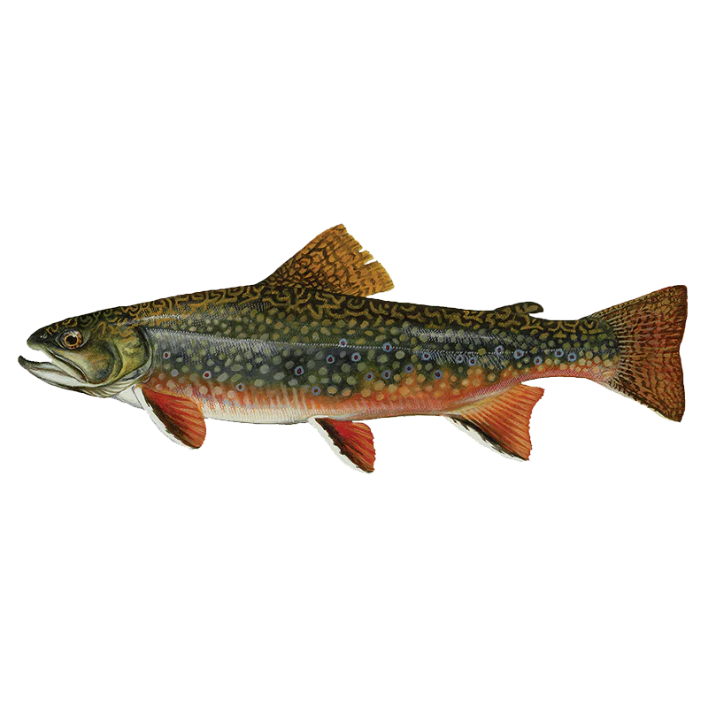

Salvelinus fontinalis
The brook trout is Quebec's most iconic freshwater fish and one of the most beautiful creatures in North American freshwater. Vivid red spots haloed in blue, a butter-yellow belly that flushes orange in fall, and a striking worm-pattern back — no photograph does the colouring of a mature brook trout justice. A day trip north of Montreal into the Laurentians to fish a cold mountain stream for brookies is one of the quintessential Quebec outdoor experiences, and one that every local angler should make at least once.
Species Overview
| Average Size (Laurentians) | 20–40 cm, 200 g – 1.2 kg |
| Trophy Size | 50+ cm, 2 kg+ |
| Habitat | Cold, clear mountain streams; spring-fed lakes; headwater tributaries |
| Peak Season | Spring (May–June) & Fall (September–October) |
| Best Baits | Small spinners, dry flies, wet flies, worms, small minnows |
| Top Local Regions | Laurentians (Parc du Mont-Tremblant), Lanaudière, Mauricie |
| Water Temperature | Optimal 10–18°C; stressed above 20°C |
| Regulations | Varies by zone — many waters are catch-and-release or fly-fishing only |
Habitat & Biology
Brook trout are not actually trout — they're a char, more closely related to lake trout and Arctic char than to brown or rainbow trout. They require cold, well-oxygenated water with clean gravel substrate. Water clarity is critical: brookies are sensitive to turbidity and pollution, making their presence an indicator of excellent water quality. Above 20°C, brook trout become severely stressed; above 24°C, mortality increases rapidly. This temperature dependence is why brookies are confined to Laurentian mountain streams and spring-fed lakes north of Montreal rather than lowland waters.
Brook trout are opportunistic and aggressive feeders relative to brown trout. They will take a well-presented lure or fly on the first pass far more readily than a brown trout of similar size. In streams, they hold in current seams behind boulders and logs, in the tail-outs of pools, and in the undercut banks of deep pools. In lakes, they cruise weed edges and rocky shallows in spring and fall, dropping into deeper cold water in summer.
Seasonal Breakdown
Spring (May – June)
Quebec's brook trout season typically opens May 1 in most zones. The first weeks of the season can be outstanding as post-winter fish are aggressive and hungry. In streams, focus on pools with adjacent fast water — trout stage in slower current on the edges of riffles and rapids, intercepting food washed downstream. Small spinners (Mepps #0–1, Vibrax) in silver or gold produce well. For fly anglers, matching the early-season emergence of stoneflies and March browns with a #12–14 nymph or soft hackle is highly effective.
Early Summer (June – early July)
As water temperatures rise, stream fishing becomes best in early morning and evening. Mid-day fish move into the deepest available pools and become lethargic. Lake trout become more active during this window as surface temperatures are still tolerable. This is the prime season for dry-fly fishing — evening hatches of caddisflies and mayflies bring fish to the surface and produce memorable fly-fishing opportunities.
Late Summer (July – August)
Stream fishing is challenging during the warmest weeks. Stick to headwater streams at high elevation where temperatures stay below 18°C, or fish very early in the morning before air temperatures peak. In lakes, brookies retreat to deep, cold, well-oxygenated water and are best targeted by trolling a small streamer or spinning lure at 20 to 35 feet. Handle any caught fish minimally and return them quickly in warm water conditions.
Fall (September – October)
Fall is the most spectacular time to target brook trout. Cooling water triggers the spawn in October and November — but more importantly, the pre-spawn period from late September onward sees fish in their most vivid colours and most aggressive feeding behaviour. Male trout develop brilliant orange and red flanks as the season progresses. Streams become easier to read as leaves drop, and fish are visible in clear pools. A red or orange lure — matching the spawning colouration — is particularly effective in September and October.

Top Presentations
Small Inline Spinners
A Mepps Aglia #0 or #1 in silver or gold is the most versatile and effective brook trout lure for stream fishing. Cast upstream and across, allow it to sink briefly, then retrieve just fast enough to activate the blade. Work every piece of cover — behind rocks, along undercut banks, and across the tail-out of pools. In stained water, switch to a fluorescent red or orange spinner for higher visibility.
Live Worm
A lively nightcrawler or garden worm drifted naturally downstream on a light hook (size 8 to 12 octopus hook, no weight or a split shot 12 inches up) is a classic brook trout technique and remains devastatingly effective. Allow it to tumble naturally through runs and pools. This is an excellent starting technique for new anglers because it requires minimal equipment and rewards patience rather than technical skill.
Fly Fishing
Brook trout are one of the most rewarding fly-fishing targets in Quebec. A 3 to 5-weight rod with a floating line covers most stream situations. Dry flies in sizes 12–16 (elk hair caddis, Adams, comparadun) produce during hatches; a bead-head hare's ear or pheasant tail nymph works throughout the day. In deeper pools, a Woolly Bugger in black or olive stripped across the current provokes reaction strikes from larger fish. For an in-depth guide to reading current and fly presentation, see our article on spring trout in Quebec mountain streams.
"The brook trout doesn't live anywhere the water isn't clean and cold and clear. Finding one means you found something worth protecting."
Gear Setup
Stream fishing for brookies calls for light tackle. A 5 to 6-foot ultralight or light spinning rod with a small reel spooled with 4 to 6 lb monofilament or fluorocarbon is ideal. Avoid braid in clear mountain streams — it is highly visible and can reduce strikes from wary fish. Keep your gear minimal and mobile for stream fishing — a small tackle box or vest with spinners, hooks, and split shot is all you need.
For lake fishing in summer, a slightly heavier medium-light rod allows for trolling small streamers or spoons at depth. Use a snap-swivel to allow quick lure changes.
Conservation Note
Brook trout populations are fragile. Many Quebec streams hold small, isolated populations that cannot sustain heavy harvest pressure. Check your zone's specific regulations before keeping fish — many waters are catch-and-release or fly-fishing only. When releasing, keep the fish wet and minimize handling time. In warm summer water (above 18°C), consider making a policy of releasing all brook trout regardless of regulations — a stressed trout returned in warm water often dies hours later even if it swims off normally.

20+ years fishing Quebec's freshwater systems. Kayak angler, catch-and-release advocate, and founder of Sub Urban Anglers.
Read More About Me